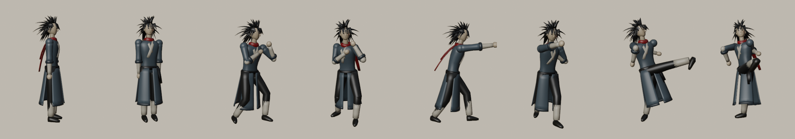
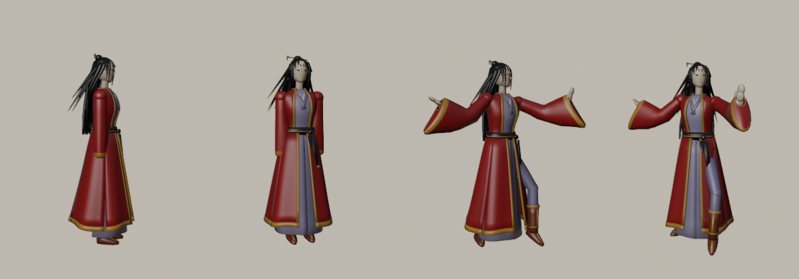
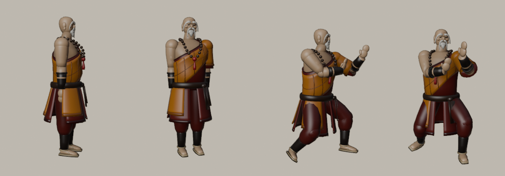
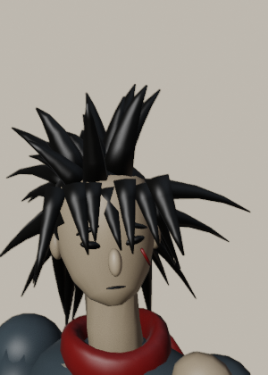
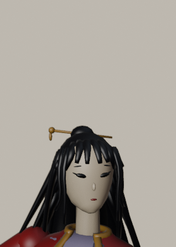
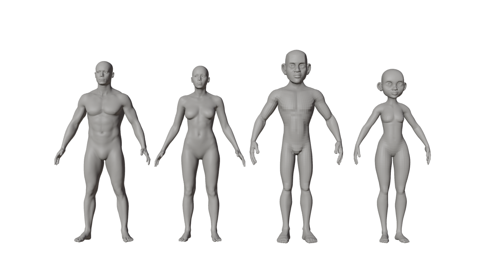
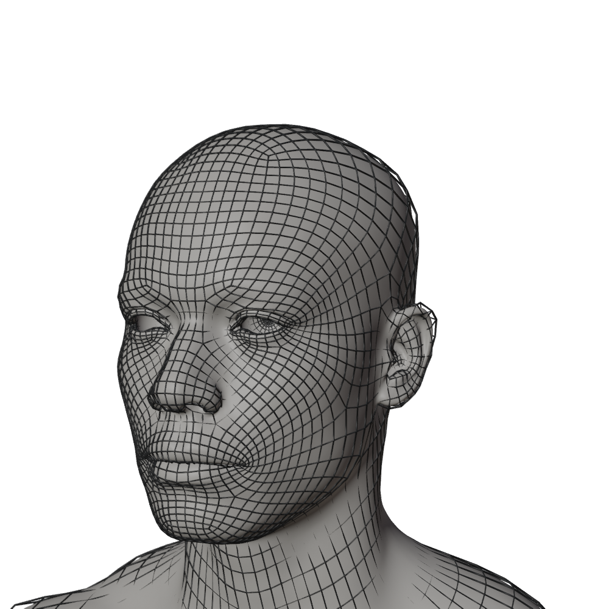

This plan rebuilds Mu-jin, Seol-hwa and Hyeon-gong from scratch to the standard of a stylized AAA fighting game. It covers clean quad topology, real anatomy, articulated hands, expressive faces, designed hair and layered costumes, painted textures, and a proper anime/ink shading pipeline in the game. The engine contract stays the same: shared skeleton names, all 44 clips, spring chains and file paths. Gameplay and netcode are untouched.
1 · Audit of the current models 診斷

Mu-jin today: tubes, ellipsoids and cone hair

Seol-hwa today: cylinder robe shells

Hyeon-gong today: mannequin limbs


What's actually wrong
Area
Now
AAA bar
Topology
Separate overlapping primitives, no edge flow
One continuous quad body, with loops at every joint
Hands
Ellipsoid "mittens"
Five fingers, 15 bones per hand, pose library
Face
Decals on an egg. No lids, mouth or jaw
Eye/mouth loops, eyeballs, lash line, expressions
Hair
Random cone spikes
Designed clumps with flow, layering and a highlight band
Cloth
Uniform cylinders
Pattern-cut layers, cross collar, hems, folds
Surfacing
10–13 flat colours, no UVs
UV atlas, painted albedo and an ink-control map
Skinning
Distance falloff, wrists candy-wrap
Heat weights, smoothing, twist bones
Outline
Cracks at hard edges, same width everywhere
Smoothed outline normals, painted width
Draw calls
~22–26 per fighter (with outlines)
≈6 per fighter
2 · Foundation: production topology 骨肉

Blender Studio Human Base Meshes v1.4.1 (CC0). The realistic male and female (left) share one topology, so their shapes can be blended. The stylized pair (right) is too cartoonish for the Gosu look.

Base-level head topology: concentric eye and mouth loops, nasolabial flow and a modelled ear. This is what blink and shout morphs need.
Body pipeline
Bake the sculpt into the cage with Apply Base, giving ~10.5k quads with the sculpted anatomy.
Reshape each character with blended targets plus regional sculpt deformers (bulk, age, taper).
Fit to the game skeleton: weight the mesh to a skeleton at its native joints, then pose those joints onto INKFIST's joints and apply. Proportions match the existing animations exactly.
Delete skin hidden under clothing. This prevents poke-through and saves triangles.
Skeleton (extended, still compatible)
The 20 shared bones keep their names, so all 44 clips and the sim keep working.
+30 finger bones (thumb and four fingers × 3 joints × 2 hands).
+4 twist bones (upper arm and forearm), driven at bake time. No more candy-wrap wrists.
+jaw, and spring chains for hair, cloth, scarf, sleeves and beads, as today.
Weights
Bone-heat auto weights on the body, then smoothing, limited to 4 influences and normalized.
Garments get their weights by data transfer from the body (nearest-face interpolation). Skirts and robes blend into chain bones.
Stress-test poses (deep crouch, high kick, arms overhead, full twist) are rendered every build.
3 · Character redesigns 人物
Each fighter keeps their identity, colours and moves, but gets a real costume with period-plausible murim construction. Every garment has a reason to exist, and each silhouette reads in black at 120 px tall.
無盡
Mu-jin 무진
The Wild Fist · 1.80 m · lean, athletic, ~20
Silhouette: a huge wild mane, swept back and tied low with a red cord; a long torn crimson scarf with two tails; a coat flaring into split panels.
Costume: a steel-blue travel coat with a jiaoling cross collar (right over left), sleeves bound at the forearm with cord, an off-white inner shirt, a black sash with a hanging knot and a coin pouch, dark trousers bloused into wrapped leggings, and cloth shoes.
Hands: bandaged knuckles and wrists. Fists by default, open palm for Tiger Palm.
Face: sharp jaw, narrow fierce eyes, a scar on the left cheek, a cocky smirk morph.
Coat · steel
Scarf · crimson
Trousers / sash · ink
Wraps · undyed linen
雪花
Seol-hwa 설화
The Crimson Sleeve · 1.68 m · slender dancer
Silhouette: very long hair falling to the thigh; half-up bun with a gold plum-blossom pin; enormous water sleeves (水袖) that trail past the hands. They are the weapon.
Costume: an open crimson outer robe (褙子) with gold borders and plum-blossom embroidery, a lavender silk inner dress with pleated skirt, a dark waist sash with a norigae (jade and tassel), and red-brown boots with gold tooling.
Hands: elegant open hands, sword-finger (剑指) for casts.
Face: calm almond eyes, red lip tint, a petal mark on the forehead.
Outer robe · crimson
Trim · old gold
Dress · lavender
Sash · plum-black
玄功
Hyeon-gong 현공
The Iron Monk · 1.86 m · massive, ~55
Silhouette: a barrel chest and wide stance; a bald head with ordination marks; long white brows and beard; giant prayer beads.
Costume: a dark crimson under-robe; a saffron kasaya in a patchwork grid over the left shoulder (right shoulder and arm bare, showing muscle); a thick belt; iron bracers; wrapped gaiters; straw sandals.
Hands: huge, with broad palms. Open palm for Tathāgata Palm, claw for grabs.
Face: deep brow ridge, age lines, a serene/wrath morph pair.
Kasaya · saffron
Under-robe · deep crimson
Beads · rosewood
Bracers · iron
4 · Face, hands & expressions 表情
Face rig (morph targets)
Morphs live on a separate head primitive, so only ~3.5k vertices carry morph data. The game drives them from the fighter's state: blinks on a timer, a shout on attack startup, pain on hitstun, a glare in guard and focus, and a smirk in intros and wins. Eyes are real eyeballs with a painted iris, plus a geometric lash line. That lash line is the strongest single cue of the manhwa look.
Hand pose library
Each animation key can now say grip_L: 'palm'. Defaults come from the clip type: strikes use fist, palms use palm, guard uses a half fist, and Seol-hwa's casts use sword-finger. These are blended during interpolation, and finger bones are keyed in the same bake.
R = shadow bias (baked AO, painted occlusion under collars and folds) · G = sheen mask (hair band, silk, iron) · B = inner lines (folds, seams, muscle lines drawn as brush strokes)
1024² webp
Eyes
Iris and pupil with a catch-light
in the atlas
This is the Arc System Works approach (Guilty Gear Xrd/Strive): artist-controlled shadow placement and inner lines baked into a control map, instead of trusting raw lighting.
Game shader upgrades
Toon material samples the albedo and ink map: shadow threshold = N·L + bias, two-tone ink ramp, inner lines multiplied in, plus a hair/silk sheen band. Rim, flash and focus tint are kept.
Custom normals: face normals transferred from a smooth head proxy give clean shadow shapes with no blotches around the nose and mouth. Hair normals come from a volume proxy, so each clump shades as one mass.
Outline: expands along a stored smoothed normal, so it no longer cracks. Width comes from a vertex colour: thick at silhouettes, tapered at hair tips, none inside the eyes and mouth. Outlines also follow morphs.
Draw calls: 3 materials (body/cloth atlas, hair, eyes) × 2 passes ≈ 6 per fighter, down from ~24.
6 · Budgets 規格
Triangles / fighter
30–40k
today 9–14k of mostly hidden overlap
Bones
≈ 75
20 shared + 30 finger + 4 twist + jaw + chains
Download / fighter
≤ 1.6 MB
meshopt glb + webp textures (today ~0.55 MB)
Draw calls / fighter
≈ 6
today ~24
Phones keep their current safeguards (adaptive resolution, no MSAA). If phone profiling shows a cost, a simplified LOD can be generated with gltf-transform.
7 · Build order 次第
1
Pipeline foundation. Base-mesh extraction (a fetch script for the CC0 bundle, then a committed compact base-body file), shaping, skeleton fit, finger/twist/jaw bones, heat weights and transfer, a UV and paint-bake framework, ink prep, and a glTF export with textures and morphs.
2
Mu-jin as the pilot, taken all the way to the quality bar: body, face, morphs, mane, coat layers, wraps, textures. Turnaround, pose and stress sheets.
3
Game integration: the new ink material, smoothed-normal outline with morphs, the expression driver, hand poses in the anim library, and the optimizer handling textures. Checked in the running game.
4
Seol-hwa and Hyeon-gong on the same pipeline: water sleeves on chains, a hair curtain, the kasaya grid, a beard, beads.
5
Regenerate the dependants: portraits, OG card and icon. Run all 44 clips per fighter through clamp and intersection checks. Tests and build pass. Before/after sheets.
8 · What stays the same 不變
Engine contract:game/public/assets/chars/<id>.glb/.json, the bone names, clip names and lengths, event markers, and the chain metadata format (gaining optional fields only).
Animations: the existing pose library and timing are kept. Poses gain hand shapes and expressions, and arm targets are re-checked against the new proportions.
Sim / netcode / AI: no change. Hitboxes live in the integer sim, not in the mesh.
9 · Questions 問答
I'm building with the defaults below now. Reply at any point to steer.
Q1. Should the base anatomy come from the CC0 Blender Studio Human Base Meshes?
Why I'm asking: until now every asset was generated from code. Production-quality human topology (face loops, fingers, joint loops) can't realistically be hand-coded to AAA standard. This CC0 mesh from Blender's own studio is what professionals start from. The build stays fully scripted: download, extract, reshape, dress.
Default: yes. A fetch script plus a compact extracted base file is committed, and the README credits Blender Studio (not required by CC0).
Q2. Keep the current colour identities and costume concepts?
Why: they match the published art direction (steel, crimson, lavender, saffron) and the portraits and menus players already know. A redesign could also change palettes, but that ripples into UI accents.
Default: keep the palette and concepts, redesign the construction and details as described in section 3.
Q3. Is a bigger download per fighter acceptable (≈0.55 MB → up to ~1.6 MB)?
Why: real textures and three times the triangles cost bytes. On slow mobile connections that adds about 2–3 s of loading for the first match. Texture size is the main lever (2048 vs 1024).
Default: yes, within 1.6 MB, with 2048 albedo and 1024 ink map. I'll report the actual sizes.
Q4. Hyeon-gong with a bare right shoulder and arm (traditional kasaya drape)?
Why: it's the authentic way the robe is worn and makes the "iron body" read. The current model is fully covered, so this changes his look noticeably.
Default: bare right arm with an iron bracer, and the left arm sleeved.
Q5. Deploy to the live site when finished?
Why: ./tools/deploy.sh replaces what players see at pages.subir.dev/inkfist. You may want to look at it locally first.
Default: no automatic deploy. I'll leave everything built and ready and tell you the one command to run.